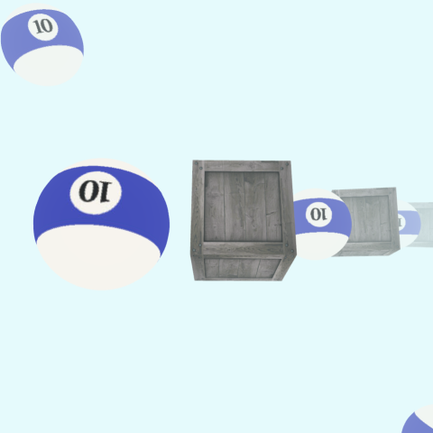

3D Graphics
The 3D Fog project is part of my CS250 Computer Graphics coursework at DigiPen. The objective of this assignment was to implement a fog effect in a 3D scene using OpenGL and integrate it as a new demo in the existing rendering engine framework. The goal was to deepen my understanding of visual effects in 3D rendering and how atmospheric effects like fog can enhance realism.
Fog demo in DemosFactory.hpp and DemosFactory.cpp, adding appropriate metadata and a lambda function to instantiate the demo.linear_fog.vert/.frag, calculating fog intensity based on a linear interpolation of depth.exponential_fog.vert/.frag, using an exponential equation to simulate denser fog with distance.fragcoordz_fog.vert/.frag, leveraging the fragment’s depth value from gl_FragCoord.z for per-pixel fog intensity.Implementing the 3D Fog demo gave me hands-on experience with how fragment shaders can be used to simulate atmospheric effects. One of the main challenges was correctly calculating the fog factor based on distance from the camera, and ensuring it blended seamlessly with scene geometry. I overcame this by experimenting with exponential fog equations and tweaking parameters until the visual result matched expectations. Through this project, I gained a stronger understanding of shader programming, depth-based effects, and the integration of new demos into a modular rendering engine.